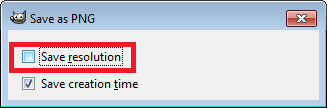
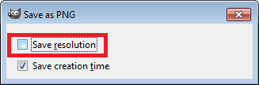

Images Appear Stretched Out in the PDF Output
Problem
When publishing XML content (DITA, DocBook, etc.), images are sometimes scaled up in the PDF outputs but are displayed perfectly in the HTML (or WebHelp) output.
Solution
PDF output from XML content is obtained by first obtaining an intermediary XML format called XSL-FO and then applying an XSL-FO processor to it to obtain the PDF. This stretching problem is caused by the fact that all XSL-FO processors take into account the DPI (dots-per-inch) resolution when computing the size of the rendered image.
The PDF processor that comes out of the box with the application is the open-source
Apache FOP processor. Here is what Apache FOP does when deciding the image size:
- If the XSL-FO output contains width, height or a scale specified for the image
<external-graphic>tag, then these dimensions are used. This means that if in the XML (DITA, DocBook, etc.) you set explicit dimensions to the image they will be used as such in the PDF output. - If there are no sizes (width, height or scale) specified on the image XML element, the processor looks at the image resolution information available in the image content. If the image has such a resolution saved in it, the resolution will be used and combined with the image width and height to obtain the rendered image dimensions.
- If the image does not contain resolution information inside, Apache FOP will look
at the FOP configuration file for a default resolution. The FOP configuration file
for XSLT transformations that output PDF is located in the [OXYGEN_INSTALL_DIR]/lib/fop.xconf.
DITA publishing uses the DITA Open Toolkit that has the Apache FOP configuration
file located in [DITA-OT-DIR/plugins/org.dita.pdf2.fop/fop/conf/fop.xconf. The configuration file
contains two XML elements called
<source-resolution>and<target-resolution>. The values set to those elements can be increased (usually a DPI value of 110 or 120 should render the image in PDF the same as in the HTML output).
The commercial RenderX XEP XSL-FO processor behaves similarly but as a fallback
it uses 120 as the DPI value instead of using a configuration file.
Tip: It
is best to save your images without any DPI resolution information. For example, when
saving a PNG image in the open-source GIMP image editor, you do not want to save the resolution.


This allows you to control the image resolution from the configuration file for all referenced images.